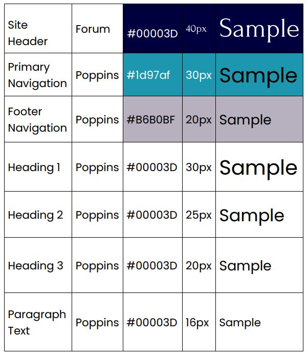

Color Palette

The color choices for the site were inspired by the maritime nature of the community. The darker blue and turquoise reflect shades of the water in the bay. Pale grey and green complement these colors and bring to mind trees and clouds. Orange could be used for a pop of contrast and remind the viewer of fall colors.
Typography

Headings will employ the Forum font. The rounded, sweeping style bring to mind rolling waves. Poppins, a sans serif font will be used for the paragraphs and footer. It easer to read in smaller sizes.